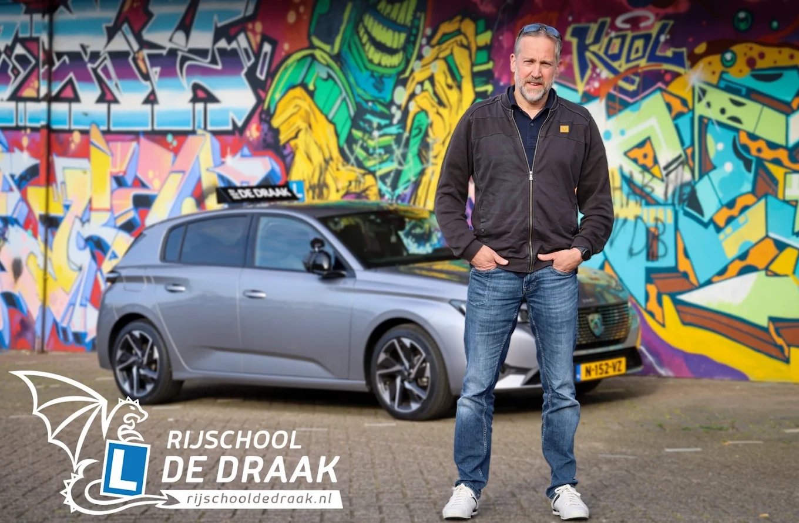
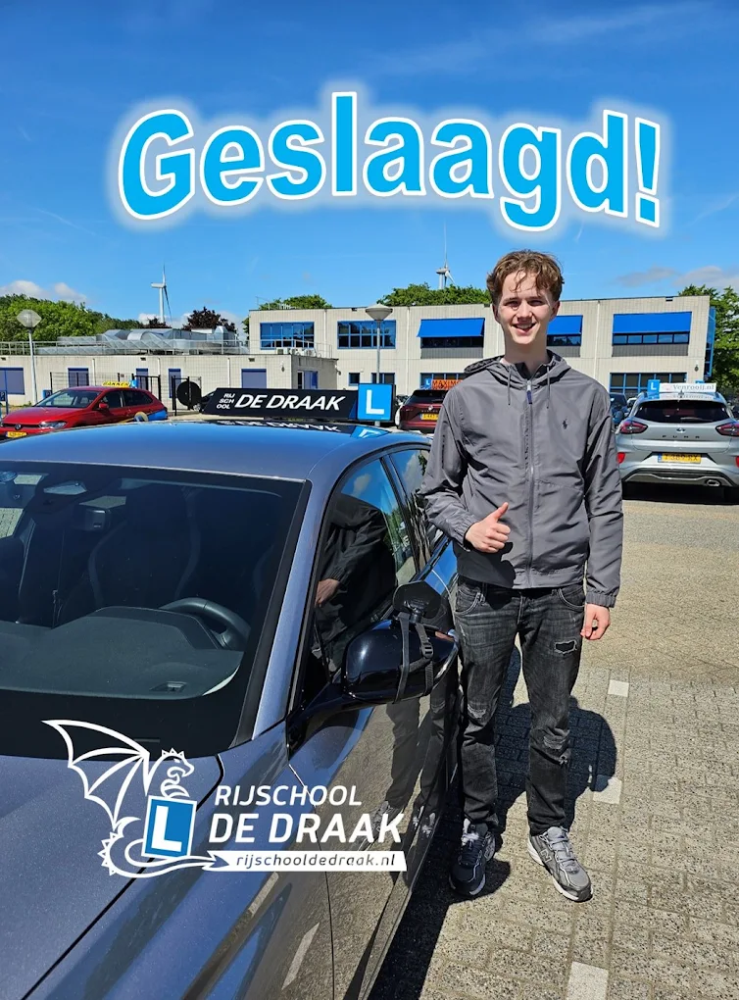
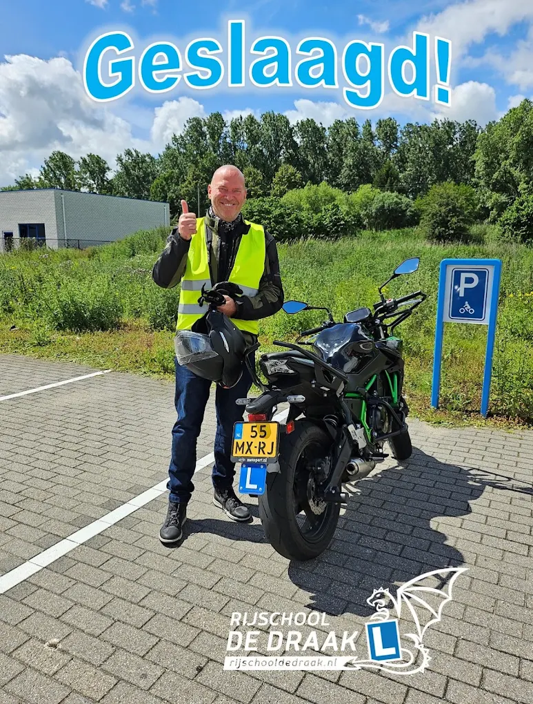
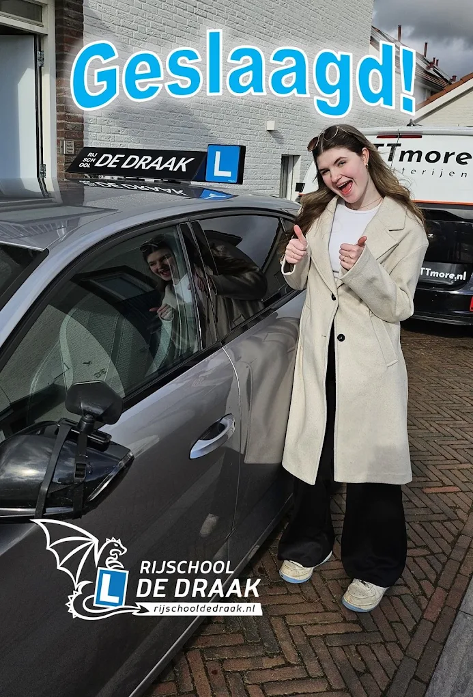
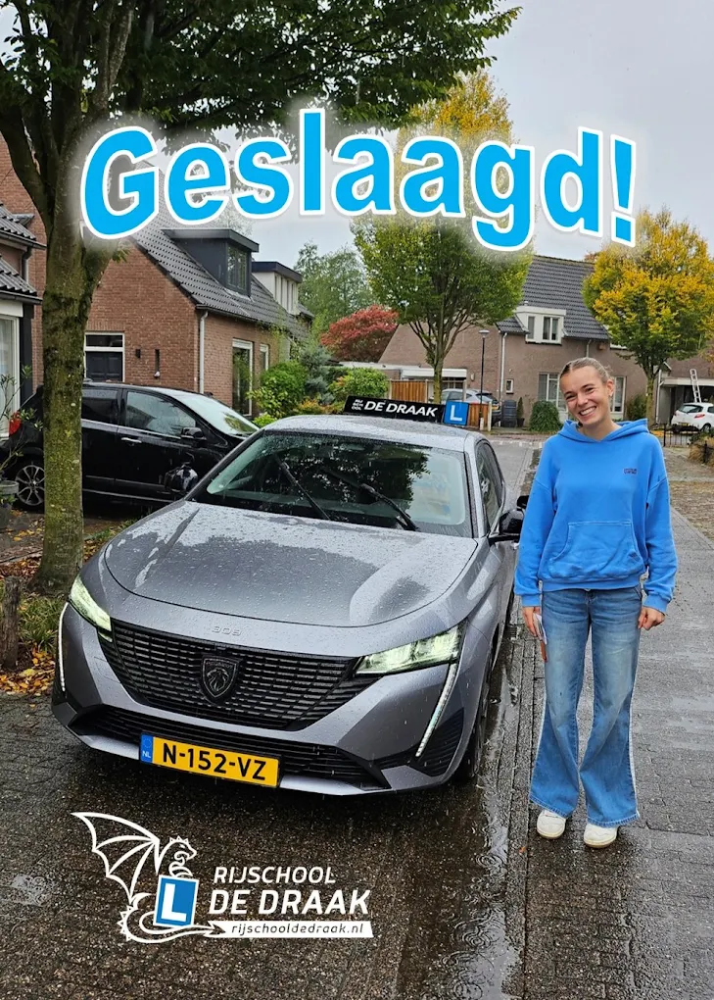
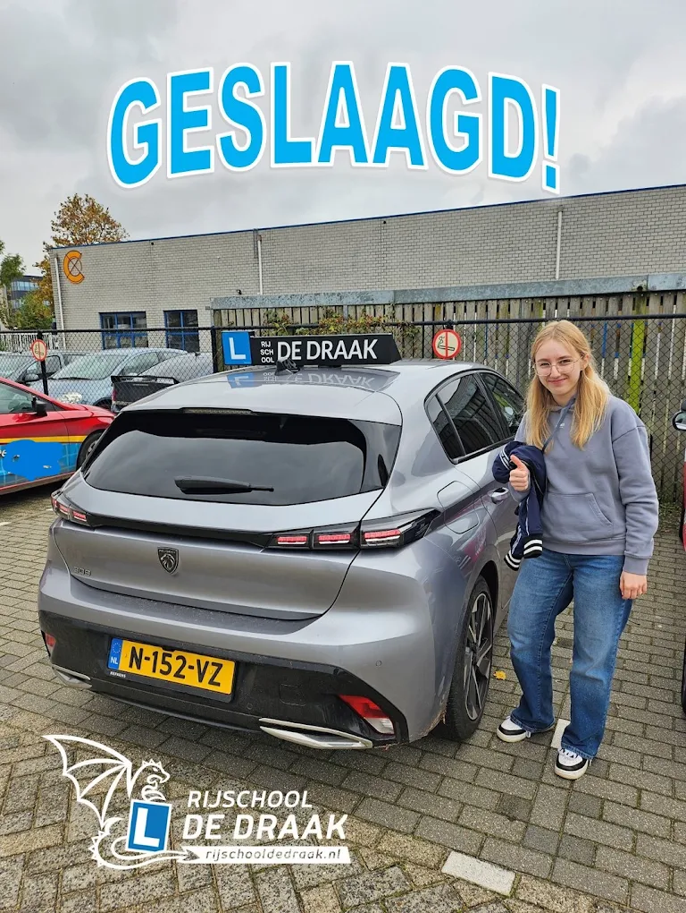
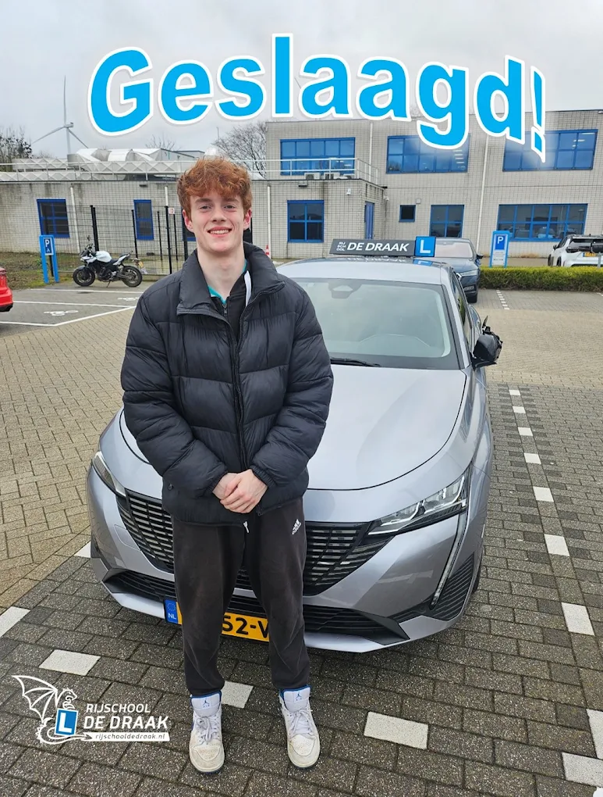

Auto- en motorrijschool · Rosmalen en Den Bosch
De Draak leert Den Bosch rijden.
- Auto en motor onder één dak
- Les van oud-CBR-examinator William Dieckmann
- Persoonlijk lesplan
Kies je route
Op vier wielen of op twee, de draak rijdt mee


De man achter de draak
Les van iemand die zelf examens afnam
William Dieckmann was jarenlang examinator bij het CBR. Die blik neemt hij mee in elke les: hij weet niet ongeveer wat er op je examen gebeurt, hij weet het precies.
- Persoonlijk lesplan. Modulair opgebouwd rond wat jij al kunt, dus geen les te veel.
- Auto en motor onder één dak. Van 2toDrive voor zestienjarigen tot je motorrijbewijs op je zesenvijftigste.
- Warmdraaien voor je examen. Een uur van tevoren opgehaald, rustig naar het CBR. Dat uur zit gewoon in de prijs.
Zo werkt het
Jouw route naar poleposition
Gratis proefles
Stap in, rijd mee en voel of het klikt. Gratis en zonder verplichtingen, ook op de motor.
Persoonlijk lesplan
Modulair opgebouwd rond wat jij al kunt. Geen les te veel, geen stap te vroeg.
Tussentijdse toets
Generale repetitie bij het CBR. Tot nu toe slaagde iedereen in één keer: 43 van de 43 (bron: clickdrive.nl).
Examen vanaf poleposition
Op examendag word je een uur eerder opgehaald om warm te draaien. Dat uur zit in de prijs.
Reviews
Geduld, humor en duidelijke uitleg. Hun woorden, niet de onze.
Door zijn geduldigheid, goede uitleg en rustige werkwijze ben ik in één keer geslaagd! Daarnaast was er zeker sprake van humor, wat de lessen erg comfortabel maakte.
Op 56-jarige leeftijd toch maar eens aan een rijbewijs begonnen, maar dan wel voor de motor. William daagt je uit om elke les een stapje meer te doen. Het resultaat: in één keer geslaagd voor AVB en AVD.
Hij geeft heel rustig les en past zich aan aan ieder individu. De gesprekken en grappen maken het luchtig waardoor de spanning snel verdwijnt. Afgelopen week heb ik in één keer mijn rijbewijs gehaald.
Als iets spannend of moeilijk was wist William mij er doorheen te coachen zodat ik met een veilig en goed gevoel kon doorrijden. Een rijinstructeur die vertrouwen heeft in jouw eigen kunnen!
Hij is professioneel, deskundig en ervaren. Ook waardeer ik zijn humor en kalmte, waardoor de stress tijdens het leren minder werd. Ik raad iedereen aan om rijlessen bij hem te volgen.
Het was prettig dat hij ook de goede dingen benoemde en niet alleen de verbeterpunten. Hij was flexibel met lessen inplannen en heeft mij erg goed voorbereid op het examen.
Vandaag in één keer geslaagd voor mijn praktijkexamen. De inhoud van de lessen is logisch gestructureerd. Daarnaast is hij flexibel en heeft hij een goed gevoel voor humor.
Dankzij zijn duidelijke uitleg en ontspannen aanpak ben ik in één keer geslaagd. Een aanrader voor iedereen die op een leuke manier zijn rijbewijs wil halen!
De muur van geslaagden
Zij haalden hun rijbewijs bij De Draak








Gratis proefles
Voel zelf waarom iedereen over de humor begint
Eén proefles en je weet of het klikt. In de auto of op de motor, zonder kosten en zonder verplichtingen.